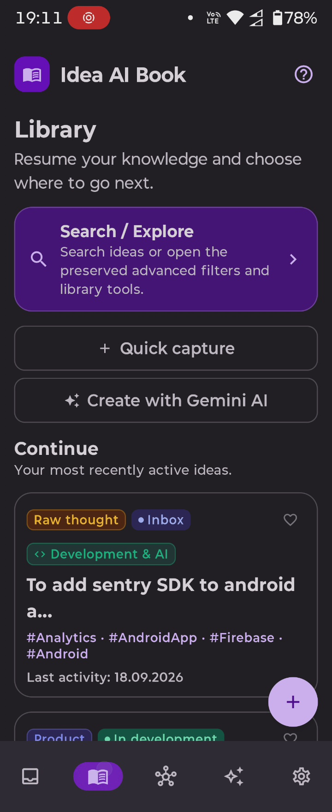
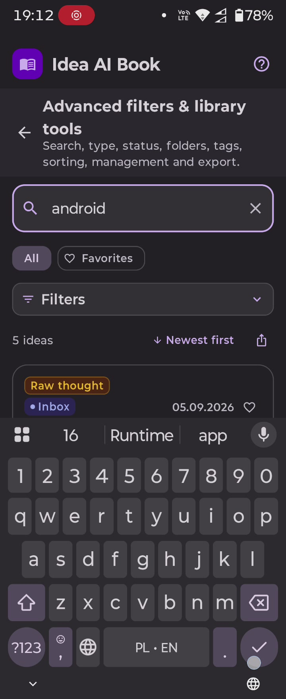
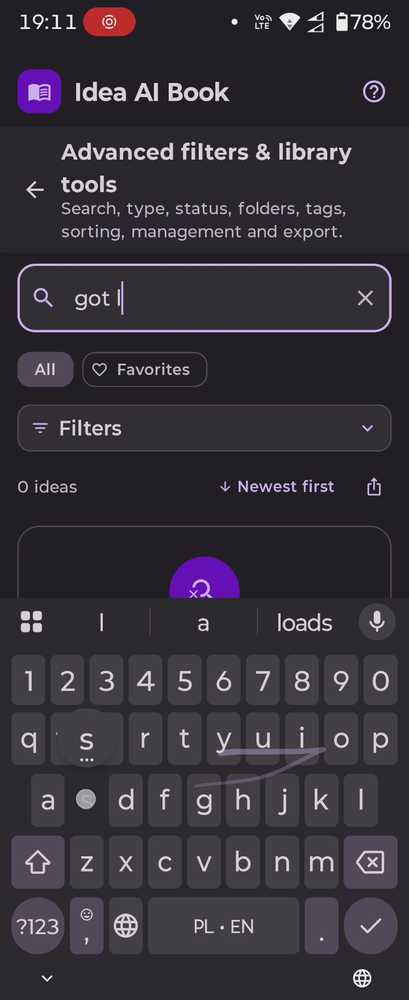
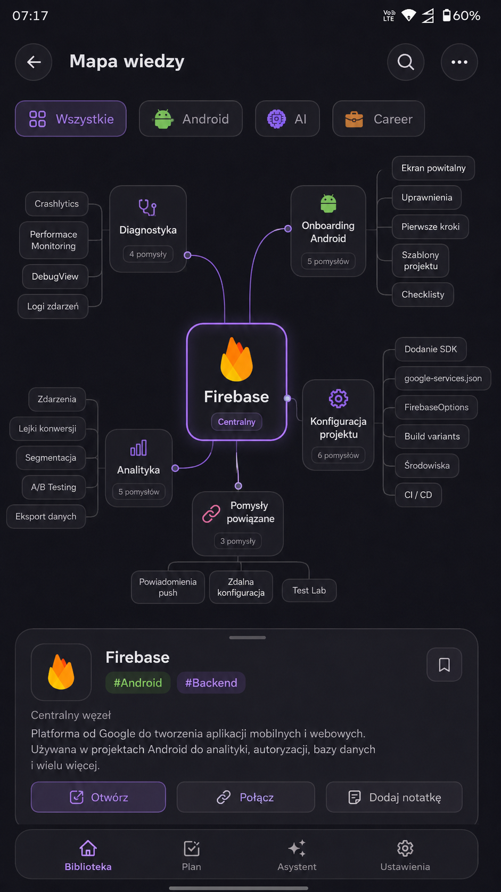
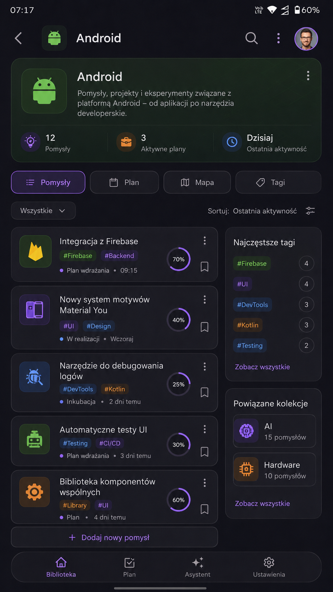
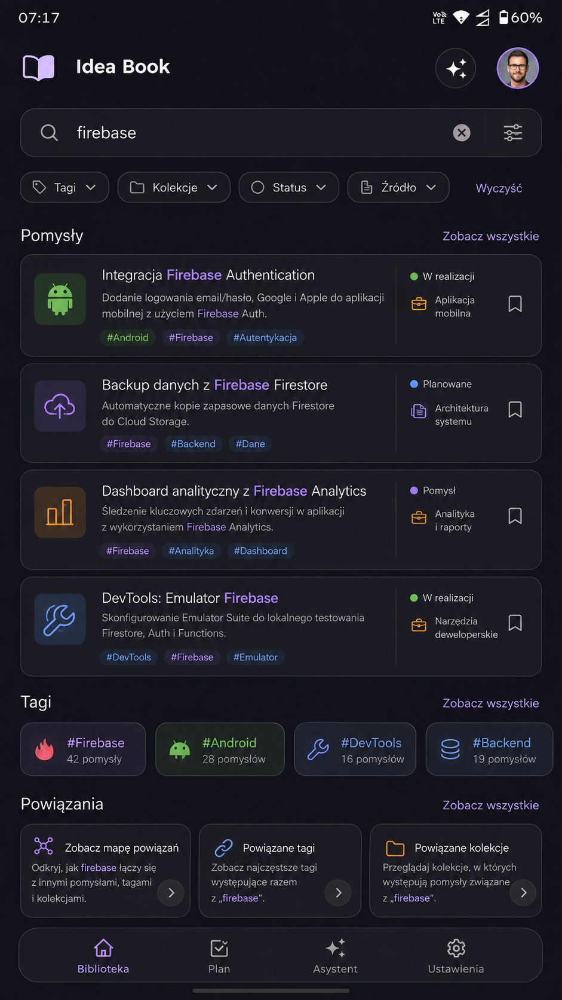

Capture
Drop a thought into the inbox before it disappears.
Idea AI Book is a focused Android workspace for capturing thoughts, organizing them into a real library, finding connections, revisiting neglected notes, and turning rough prompts into editable drafts with Gemini AI.
 Idea AI Book?
Idea AI Book?Main capture queue. Review ideas and move them forward.
On-device text processing for classifying notes and ideas.
One idea, many paths
The app is built around the lifecycle of an idea rather than a pile of disconnected notes.
Drop a thought into the inbox before it disappears.
Search, filter, favorite, tag and group ideas into folders or projects.
Explore relationships between ideas instead of treating every note as an island.
Surface neglected ideas and notes that still need a concrete next step.
Use Gemini-assisted generation to create an editable draft before saving it into the book.
Current Android · 18 September 2026
Fresh physical-device captures show the current Library and Search / Explore surfaces as they actually run on Android.

Resume recent work, jump into Search / Explore, capture quickly and open Gemini from one focused home surface.

Advanced filters, sorting, export and dense result cards remain usable on compact-width Android.

Discovery stays explicit when nothing matches, so the user can recover without losing the surrounding context.
Redesign explorations
These frames are proposed design explorations, shown as visual direction rather than claims about the current runtime.

A graph-led way to move through related ideas, domains and connections instead of treating notes as isolated cards.

A richer thematic workspace that can bring ideas, plans, tags and related collections into one coherent place.

A future-facing exploration of search where ideas, tags and relationships can become one connected discovery surface.
Data boundary
Core idea persistence is designed around local Android storage. AI-assisted generation and telemetry have separate external-service boundaries, documented openly rather than hidden behind a vague “AI” label.
Project status
Idea AI Book is under active development. The live Android captures shown above were recorded on 18 September 2026. Redesign explorations are labelled separately and may not match the current runtime exactly. Features, wording and data behavior may continue to evolve.